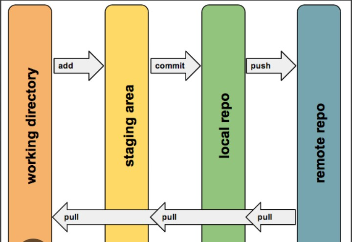
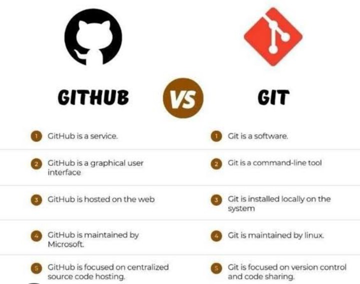
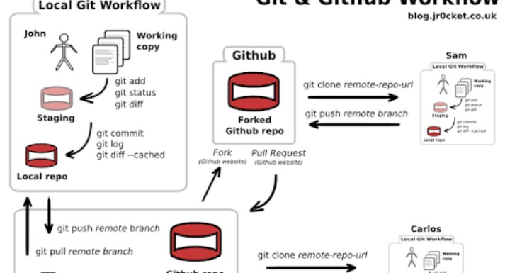
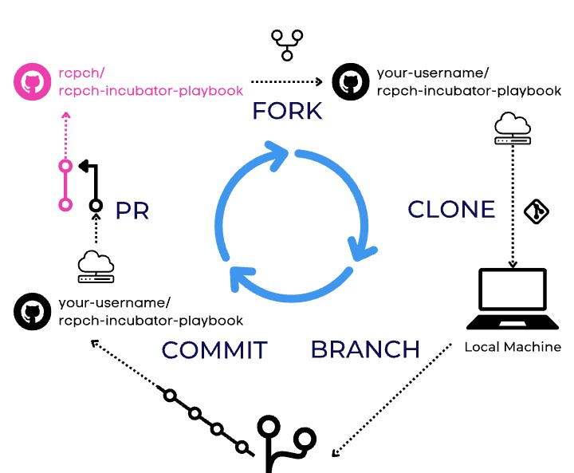
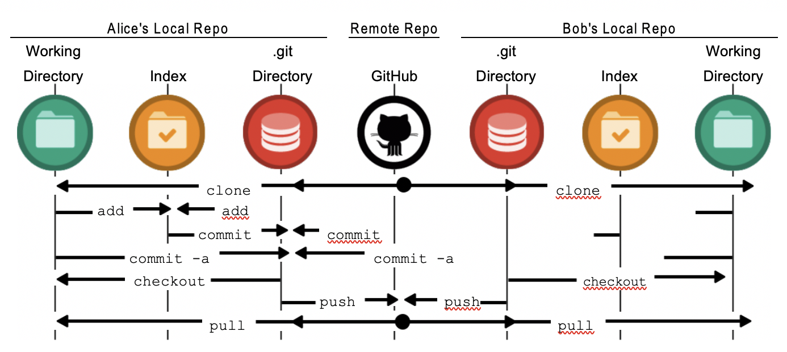

Git and GitHub are two of the most important tools in modern software development. Every professional developer uses them to manage code, track changes, collaborate with teams, and safely store projects online. Whether you are a beginner learning HTML and CSS or an experienced Python developer, understanding Git and GitHub is an essential skill.

Many beginners think Git and GitHub are the same thing, but they are different. Git is a version control system that runs on your computer and records every change made to your project. GitHub is an online platform where Git repositories are stored, shared, and managed.
Imagine writing a book. Every day you make changes to different chapters. Instead of creating dozens of files like Book Final, Book Final 2, Book Final Latest, Git automatically saves every version. If something goes wrong, you can return to an earlier version in seconds.
Git is a distributed version control system created by Linus Torvalds. It helps developers keep track of every modification made to their files. Every save can become a checkpoint that allows you to compare changes, restore previous versions, or work on new features without damaging the main project.
Git works locally on your computer, meaning you don't need an internet connection to record changes. This makes it fast, reliable, and extremely powerful.

GitHub is a cloud-based platform that stores Git repositories online. It allows developers to upload projects, collaborate with others, review code, report issues, and maintain open-source software. Millions of developers around the world use GitHub every day.
If Git is your notebook, GitHub is the cloud backup where your notebook is safely stored and can be shared with anyone.
Learning Git offers many advantages:
Installing Git is simple. Visit the official Git website, download the installer for your operating system, and complete the installation. After installation, open the terminal or command prompt and verify it using:
git --version
If Git is installed correctly, it will display the installed version number.
A repository is simply a project folder managed by Git.
mkdir MyProject cd MyProject git init
The command git init creates a new Git repository inside your project folder.

One of the first commands every developer learns is:
git status
This command tells you which files have changed, which files are new, and whether everything has been committed or not.
Example:
git status Output: new file: index.html modified: style.css
This information helps developers know exactly what has changed before saving their work.
Before Git saves changes permanently, files must first be added to the staging area.
git add index.html
To add every file:
git add .
The dot means "add everything in the current folder."
After adding files to the staging area, the next step is creating a commit. A commit is like taking a snapshot of your project. Every commit records the current state of your files so you can return to it later if needed.
git commit -m "Added homepage"
The -m flag allows you to write a short message describing what changes were made. Always use meaningful commit messages because they make your project's history easier to understand.
Good Examples:
git commit -m "Created login page" git commit -m "Fixed navigation menu" git commit -m "Improved responsive design"
Bad Examples:
git commit -m "Update" git commit -m "Done" git commit -m "Final"

Git stores every commit in the repository. You can view the complete history using:
git log
The output includes the commit ID, author's name, date, and commit message. This history allows developers to understand how a project has evolved over time.
Once your project is ready, you can upload it to GitHub so it is stored online. First, create a new repository on GitHub. Then connect your local repository using:
git remote add origin https://github.com/username/project.git
After connecting, upload your project with:
git push -u origin main
Your entire project will now be available on your GitHub account where you can access it from any computer.
Sometimes you want to download an existing GitHub project to your computer. This is called cloning.
git clone https://github.com/username/project.git
Git automatically downloads every file along with the complete commit history.
If another developer updates the project on GitHub, you can download the latest changes using:
git pull origin main
This command keeps your local project synchronized with the online repository.
After making new commits, upload them again using:
git push
This sends your latest work to GitHub.
Branches allow developers to work on new features without affecting the main project. This makes development safer and more organized.
git branch feature-login git checkout feature-login
You can also create and switch in one command:
git checkout -b feature-login
When a feature is complete, it can be merged into the main branch.
git checkout main git merge feature-login
This combines both branches into one updated project.
Imagine you are creating a portfolio website. On Monday you finish the homepage and commit it. On Tuesday you create the About page and commit again. On Wednesday you redesign the navigation bar but accidentally break the website. Instead of rebuilding everything, Git allows you to return to Monday's or Tuesday's version within seconds.
This is why professional developers depend on Git every day.

Git and GitHub are essential tools for every developer. They make coding safer, more organized, and easier to manage. Whether you work alone or in a large team, these tools help track every change, recover previous versions, and collaborate efficiently. Learning Git and GitHub early in your programming journey will improve your workflow, strengthen your portfolio, and increase your chances of becoming a professional software developer.